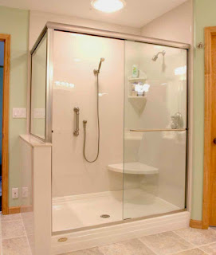

Semakin berkembangnya dunia pembangunan, karenanya hadir banyak material penambah yang melengkapi estetika sebuah banguanan. Melainkan, tidak cuma estetika tapi juga keamanan bagi penghuni di dalamnya. Tak halnya hadir berbagai material kaca dan juga lantai yang kian melengkapi nilai estetika sebuah bangunan. Kaca juga awam diaplikasikan sebagai material untuk pintu, furnitur, railing tangga, shower box, kanopi, table top, dan malahan panel dinding.
Macam-tipe kaca diantara lain kaca tempered, kaca shower, railing kaca, kanopi kaca dan masih banyak lagi. Setiap kaca mempunyai fungsi masing-masing yang membikin banyak orang semakin mebutuhkannya dari hari ke hari.
Jasa Pemasangan Kubikel Toilet di Nganjuk
Dahulu, kamar mandi hanya disekat oleh penyekat yang berbahan kayu, jarang sekali yang menerapkan bahan lain. Kubikel kamar mandi merupakan kaca pembatas yang dipakai pada WC.
Seandainya anda berminta untuk membeli partisi kaca, anda bisa mengunjungi dis.or.id. Disana terdapat kubikel kaca Nganjuk dengan bermacam ukuran dan ketebalan dengan harga yang cukup terjagkau di bandingkan dengan tempat lainnya. Kaca sebagai penyekat dalam kamar mandi lazim disebut kaca shower. Kaca shower banyak digunakna karena memberikan kesan mewah.
Harga yang ditawarkan bahkan cukup relatif murah.
Tapi penggunaan kaca di kamar mandi bisa jadi situasi sulit saat Anda meletakkannya dengan salah. Jika anda ketika ini sedang memerlukan kaca shower untuk kamar mandi, seketika saja kunjungi dis.or.id untuk melakukakn pengorderan ataupun menanyakan terperinci harga dari kaca shower. Kaca shower yang di jual di jamin kaca shower yang memiliki kwalits terbaik dan berkualitas tinggi.
Distributor & Supplier Kaca Shower

Salah satu sistem yang bisa diaplikasikan untuk menciptakan kamar mandi yang senantiasa bersih merupakan menggunakan shower sebab cara pembersihannya memang jauh lebih praktis dibanding dengan yang menerapkan konsep bak mandi. Dan sensasi mandi menjadi lebih asik untuk dinikmati. Shower screen adalah kotak atau alat yang berfungsi sebagai penyekat ruang khusus untuk kamar mandi. Tentunya banyak kelebihan yang bisa di peroleh dari pengaplikasian kaca shower pada kamar mandi di rumah anda. Kita tak perlu repot lagi mencari tukang sendiri karena pemasangan alat sekat ini memang memerlukan teknik tersendiri.
Tidak anda sedang mencari kaca shower untuk kamar mandi, anda dapat segera mengunjungi dis.or.id. Disana tersedi kaca shower dengan beragam ukuran dan juga harga yang juga cukup terjangkau. Tak terbaik dan harga relatif murah. Anda dapat buktikan sendiri.
Distributor, Supplier & Jasa Pasang Kanopi Kaca
Salah satu variasi kanopi kaca yang bisa anda aplikasikan pada atap merupakan atap kaca skylight yang yakni kanopi kaca dalam format jendela horizontal atau kubah yang lazimnya ditempatkan di atap bangunan yang mempunyai maksud untuk pencahayaan ruangan. Jika akan memberikan kesan lapang ketika berada di kamar mandi, mandi dengan shower akan memberikan kesegaran tersendiri dibanding kamar mandi dengan bak mandi. Canopy kaca dengan atap kaca memang sebuah bangunan yang asangat elgan untuk jaman modern seperti sekarang ini dengan harga yang sangat lumayan jikalau di bandingkan kanopi atap awam. Jadi sudah tidak heran lagi segala orang ingin mencari harga yang amat kompetitif untuk menyesuaikan budget atau anggaran mereka masing – masing untuk membuat produk canopy kaca. Disinilah letak perbedaan optis yang utama antara akrilik (acrylic) dengan kaca. Sekiranya tembus pandang, kaca menyerap cahaya yang masuk sehingga kian tebal kaca maka kian sedikit cahaya yang dapat melewatinya, karenanya sifat transparannya makin berkurang.|Di samping pintu kaca shower akan membikin kamar mandi kecil nampak lebih besar. Pada atap akrilik, perembesan sinar yang terjadi demikian kecil sehingga meski ketebalannya bertambah, sifat transparannya tak banyak berubah.
Harga untuk tiap pemasangan bahkan berbagai sesuai dengan keperluan anda. Tidak anda sedang mencari kanopi kaca, anda dapat segera mengunjungi dis.or.id.
Jasa Maintenance Kaca

Jasa maintenance kaca menawarkan pelayanan perawatan bahan bangunan yang terbuat dari kaca. Beraneka, kaca akan kelihatan kusam karena telah lama tak dibersihkan. Selain cuma membersihkan kaca, jasa maintenance kaca juga bisa melaksanakan pembetulan. Membersihkan bagian kaca gedung Anda yang mungkin rusak, pecah, atau mengalami permasalahan lainnya.
Sekarang juga hadir maintenance kaca untuk membersihkan kaca berbentuk melengkung. Lebih dari itu, Jika spesialis yang dimilik oleh dis.or.id juga dapat mengkoreksi kaca yang rusak. Seandainya juga dengan warna dan wujud kaca.
Tidak anda sedang memerlukan jasa maintenance kaca, anda dapat langsung mengunjungi dis.or.id. Disana anda dapat memanfaatkan jasa maintenance kaca dengan daya spesialis yang kapabel membersihkan gedung kaca dengan produk pembersih kaca apa yang terbaik untuk menghilangkan kotoran dan kusam. Selain cuma dalam hal membersihkan kaca, mereka juga mampu melakukan perbaikan serta penggantian kaca yang mengalami kerusakan.
Jasa Pemasangan Kaca Tempered

Tak anda mebutuhkan jasa maintenance kaca, anda dapat mengunjungi dis.or.id. Selain ini disebabkan bahan ini bukan tipe kaca awam. Masyarakat telah mengerti keunggulan dari kaca ini. Untuk gedung perkantoran, bagian yang paling sering dihasilkan dengan bahan yang satu ini adalah jendela dan pintu.
Sementara itu, untuk hunian, kanopi dan kamar mandi menjadi bagian yang paling menarik kalau dijadikan dari bahan kaca tempered. Kini dari kaca tempered bisa mengurangi bahaya cedera saat kaca pecah sebab saat terjadi sesuatu seperti kaca pecah maka kaca tempered akan terurai menjadi butiran kecil yang relatif lebih aman dari potongan pecahan kaca biasa. Disana anda bisa memanfaatkan jasa pemasangan kaca tempered untuk segala tipe bidang maupun bangunan. Tidak dikala ini anda sedang mau membangun suatu bangunan atau gedung, anda bisa memanfaatkan kaca tempered untuk diaplikasikan langsung ke segala macam bidang.
Distributor & Supplier Pintu Kaca
Kerja ini banyak model pintu seperti layak dengan ada di bayangan Anda. Ada banyak desain pintu kaca yang dapat kita temui seperti pintu kaca berbentuk sliding (geser) atau folding (lipat). Perlengkapan teladan pintu kaca dapat anda temukan, tidak hanya teladan pintu kaca konvensional, yakni pintu kaca lipat, namun juga pintu kaca geser. Desain tersebut bisa disesuaikan dengan konsep properti Anda. Sekarang tak kalah penting lagi yakni pemilihan kaca. Dalam hal ini, terdapat beberapa ragam kaca dengan kualitas yang terbaik. Sekarang paling banyak diminati ketika ini ialah kaca tempered sebab jauh lebih kuat dan bendung lama.
Anda bisa memiliki pintu kaca unggulan anda sekarang juga dengan mengunjungi dis.or.id. Disana terdapat berbagai variasi pintu kaca yang dapat anda jadikan alternatif.
Kaca yang di pakai merupakan kaca dengan mutu terbaik. Anda bisa memilih kaca tempered yang kini ini sedang naik daun.
Jual Kaca Cermin
Kaca cermin dapat dijadikan aksesoris untuk mempercantik interior rumah Anda. Lihat saja banyak produk cermin yang diciptakan dengan desain unik dan menarik. Anda bisa tentukan desain seperti apa yang Anda inginkan. Sekarang, cermin tak hanya berbentuk persegi atau persegi panjang saja. Ada cermin yang didesain unik seperti penyerupai daun, oval, dan lain sebagainya. Bahkan juga komponen tepi. Cermin minimalis mempunyai siku.
Dis.or.id yakni penyedia beragam ukuran kaca cermin yang dapat anda aplikasikan ke gedung, kantor ataupun rumah anda. Tidak hanya itu, harga yang di tawarkan sangatlah terjangkau dengan mutu dan juga mutu terbaik. Malah, ada juga furniture berupa pintu yang terbuat dari kaca cermin. Dengan tipe kaca ini, orang yang berada di luar ruangan tidak bisa memperhatikan apa yang ada di dalam ruangan. Sementara itu, Anda yang berada di dalam ruangan bisa memandang orang lain yang ada di luar. Cermin ini lazimnya ditempatkan di kamar mandi, di atas wastafel, atau di kamar tidur. Atau kaca cermin ini juga dapat dibuat sebagai bahan pintu lemari.
Jasa Pemasangan Railing Kaca

Railing kaca ialah opsi yang ideal dikala Anda menghendakin desain interior rumah yang minimalis. Tak rumah Anda sudah dibangun dengan desain minimalis, maka tak salah saat railing, entah itu railing tangga dan balkon terbuat dari kaca. Pastikan komponen tersebut terbuat dari bahan aluminum yang kuat. Tapi, Anda semestinya pastikan railing kaca berkwalitas terbaik. Kaca jenis yang satu ini sudah terkenal dengan ketahanannya. Tak kaca ini pecah, pecahannya halus sehingga tak akan melukai orang.
Anda dapat memilih kaca dengan kwalitas terbaik. Tak ini tak hanya ditetapkan oleh ketebalan atau harga tapi juga oleh macam. Railing ini bisa diciptakan sebagai pembatas pada tangga dan juga sebagai pembatas pada balkon. Kaca ini benar-benar kuat dan juga aman. Dikatakan betul-betul aman lantaran kaca tempered tidak memunculkan pecahan yang runcing dikala tiba-tiba kaca pecah entah itu dampak kecelakaan atau petaka seperti gempa. Pecahannya benar-benar kecil dan lembut sehingga tak akan melukai siapapun yang terkena pecahan. Aluminum lazimnya yang digunakan sebagai railing atau frame. Kalau memberikan kesan minimalis pada interior rumah, ini juga membikin rumah Anda terlihat lebih nyaman untuk dihasilkan daerah tinggal.
Railing kaca dengan mutu terbaik bisa anda peroleh di dis.or.id. Harga yang betul-betul ekonomis serta kualitas terbaik yang telah terjamin membuat anda tak akan menyesal membeli railing kaca di dis.or.id. Tentu dengan harga yang murah tapi tetap berkelas.
Distributor & Supplier Pintu Lipat Kaca

Bukan cuma komponen depan saja yang dipasang pintu kaca lipat namun komponen dalam juga dapat. Secara biasa, kaca dibagi menjadi 6 ragam, yakni kaca bening, kacang berwarna atau tinted glass, kaca es, kaca cermin atau one way glass, kaca laminasi, dan yang terakhir kaca tempered. Apalagi sekiranya taman Anda terbuka sehingga pencahayaan alami masuk. Karenanya, sinar itupun akan masuk ke dalam ruang makan karena penyekatnya terbuat dari pintu kaca transparan.
Muncul pertanyaan mengapa Sepatutnya menerapkan kaca tempered. Banyak pertimbangan yang membuat Anda pasti yakin untuk memilih kaca tempered daripada variasi kaca yang lainnya. Dan yang pasti, ruangan menjadi lebih modern, minimalis, dan nyaman untuk ditempati. Jadi, bukan cuma pintu saja yang berupa kaca, melainkan juga seluruh sekat ruangan.
Distributor & Supplier Partisi Kaca
Partisi kaca sudah diaplikasikan dimana saja. Tidak sebagai pembatas di mall, hotel, atau kantor-kantor saja, namun juga digunakan sebagai sekat ruangan di rumah hunian. Banyak rumah hunian yang sekatnya kini terbuat dari kaca. Alasan yang kedua, partisi kaca ini membuat ruangan kelihatan benar-benar minimalis. Ini dengan konsep atau desain properti ini. Tak sekali partisi ini lebih hemat ketimbang membuat pembatas berupa tembok yang terbuat dari batu bata, pasir, dan juga semen. Anda bisa partisi kaca yang anda inginkan di dis.or.id. ruangan disekat dengan partisi ini seperti kamar mandi dalam dan taman dalam ruangan. Akan tetapi, Anda wajib selektif dalam hal memilih kaca untuk partisi. itu, tentukan juga jenis kaca yang mau digunakan apakah transparan, semi transparan, atau kaca cermin yang ruangan betul-betul privat. Karena juga dengan jenis kaca. Sebab macam kaca ini memutuskan privacy ruangan yang disekat. Ada kaca transparan, semi transparan, dan juga kaca cemin yang ruangan amat privat. Jikalau anda sedang mencari distributor dan supplier partisi kaca yang kaca dengan mutu terbaik, anda tinggal mengunjungi dis.or.id.